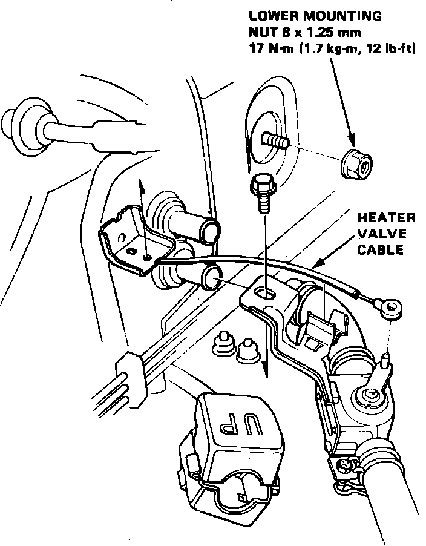
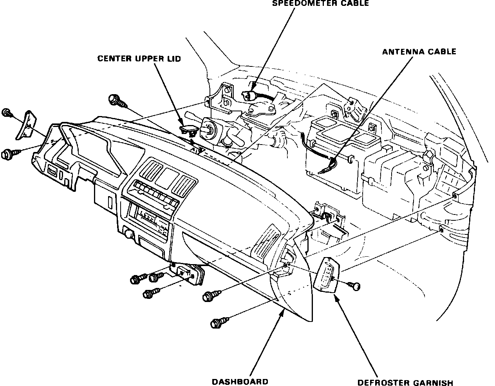

Heater Core: Service and Repair
Fig. 23 Heater housing removal. Integra:

1. Disconnect battery ground cable and drain cooling system.
2. Disconnect heater hoses at firewall and allow coolant to drain from heater core, then plug core tubes.
3. Disconnect control cable from water valve and remove heater lower mounting nut, Fig. 23.
4. Remove console as follows:
a. Raise parking brake lever and, on manual transaxle models, remove shift knob.
b. Pry up screw covers from front and rear of brake lever housing, then remove retaining screws.
c. Remove two retaining screws from each side of console, then the console assembly.
d. Remove console box bracket.
5. Disconnect air mix cable from heater housing.
Fig. 24 Instrument panel installation. Integra:

6. Remove instrument panel as follows:
a. Remove steering wheel, fuse panel cover and lower dash trim panel.
b. Disconnect instrument panel wiring harness from fuse panel.
c. Disconnect antenna lead from radio and the heat control cable.
d. Remove steering column bracket bolts and lower steering column.
e. Remove bolt and disconnect ground strap from right side of steering column.
f. Open glove box and remove instrument panel mounting bolt on right side.
g. Remove two nuts securing hood release handle.
h. Remove center upper lid from top of instrument panel and defroster garnishes from each end of instrument panel, Fig. 24.
i. Remove six retaining bolts and one screw, pull instrument panel away from cowl and disconnect speedometer cable, then remove instrument panel assembly.
7. Disconnect electrical connectors from heater assembly.
8. Remove two heater housing mounting bolts, then the heater assembly.
9. Remove screws securing heater core retaining plate and the plate, then withdraw core from housing.
10. Reverse procedure to install, noting the following:
a. Apply sealer to grommets when installing heater housing.
b. Install and adjust control cables as necessary.
c. When filling cooling system, loosen bleed bolt in water outlet. When coolant running from bleeder is free of bubbles, retighten bolt.